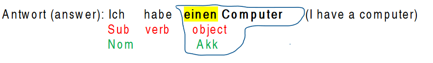
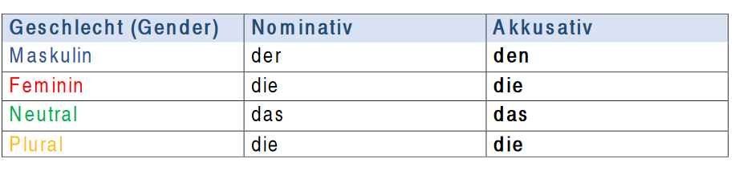
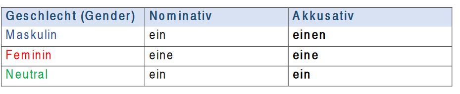
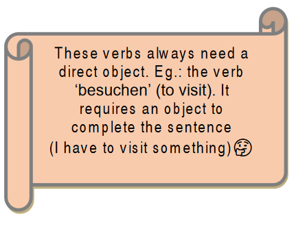

The accusative – Der Akkusativ
What is the accusative case?
We use the accusative case to show the direct object in a sentence (the receiver of an action). It answers the question: Wen oder was? (Whom or what?)
Akkusativ = direktes Objekt
Beispiel (example):
Frage (question): Was hast du? (What do you have?)

Here you can see, the object is ‘einen Computer’ in accusative.
Definiter Artikel im Akkusativ (definite articles in the accusative case)

Indefiniter Artikel im Akkusativ (indefinite articles in the accusative case)

- If you notice the table in the masculine nouns:
- ▪ (In definite articles) der changes to den
- ▪ (In indefinite articles) ein changes to einen
For the other genders, the articles are the same as nominative.
When to use accusative?
 A sentence with a direct object
Sare liebt den Hund (Sara loves the dog)
A sentence with a direct object
Sare liebt den Hund (Sara loves the dog)- After specific verbs.
e.g.: besuchen, haben, kennen +Akk
Er besucht ein Museum. (He visits a museum)
- After specific prepositions
- - für (for)
- - ohne (without)
- - durch (through)
- - gegen (around, against)

Sie fahren durch die Stadt.
(They drive through the city)
Das Buch ist für den Lehrer. (The book is for the teacher.)